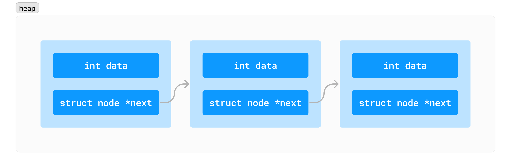
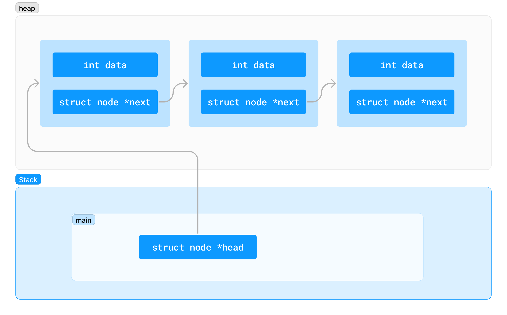
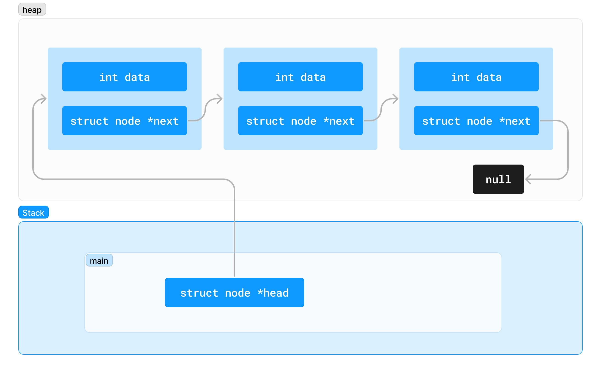

Linked Lists Part 2
What we did:
- Concept Intro
- Insert at head
- Linked list traversal
- Insert at tail
What we'll do today:
- Inserting anywhere in LL
- In the middle
- With only one item in a list
- Removing from LL
Recap
A linked list is a chain of nodes
- A node is a struct, usually allocated on the heap
- It contains a payload (some data), and a pointer to another node
A node declaration in C
struct node {
int data;
struct node *next;
};
Visualisation of linked list

Need a reference to the linked list

How do we know we're at the end of the linked list?

To create a linked list, we:
- Define a struct for a node
- A pointer to keep track of where the start of the list
- A way to create a node and then connect it into our list
Demo
Today's goals:
- insert_at_index
- delete_node_at_index
- remove_tail
- size_of_linked_list
Inserting in the middle of a linked list
- Discuss
- Whiteboard
- Implement
Deleting in the middle of a linked list
- Discuss
- Whiteboard
- Implement
Feedback